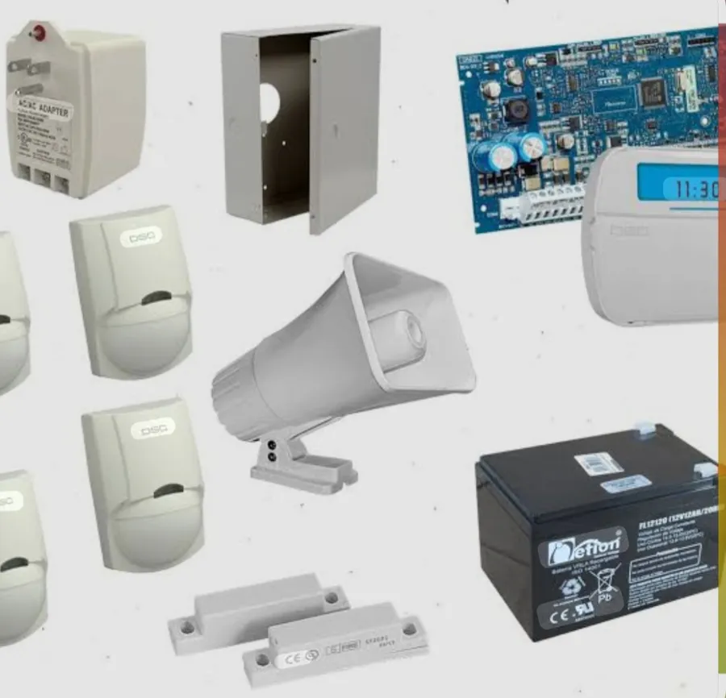
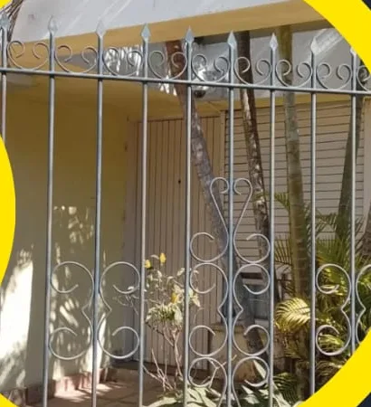
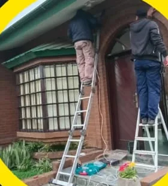
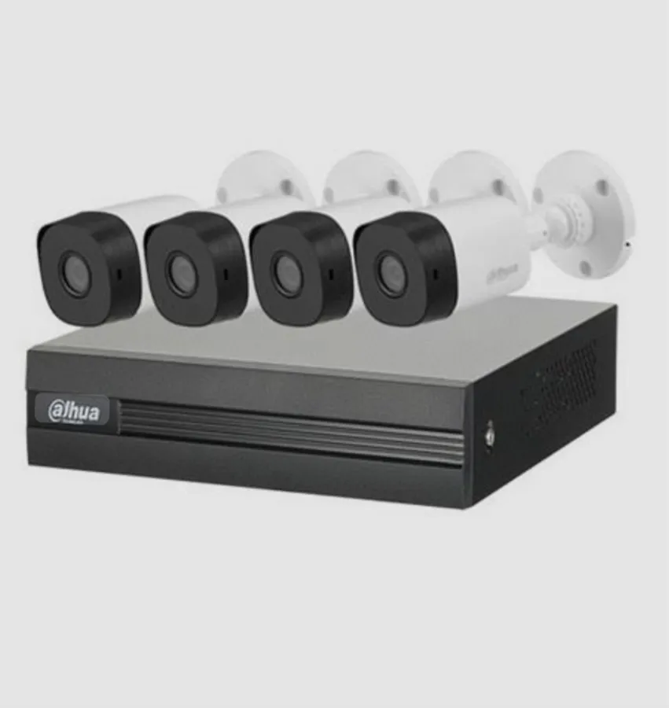
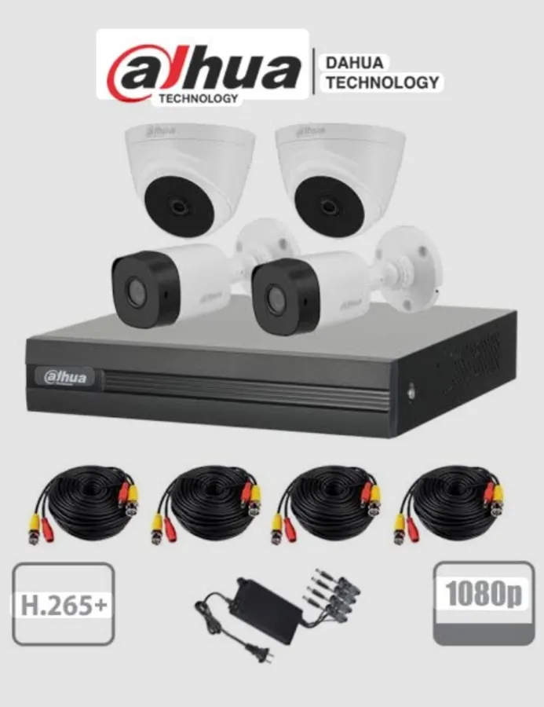
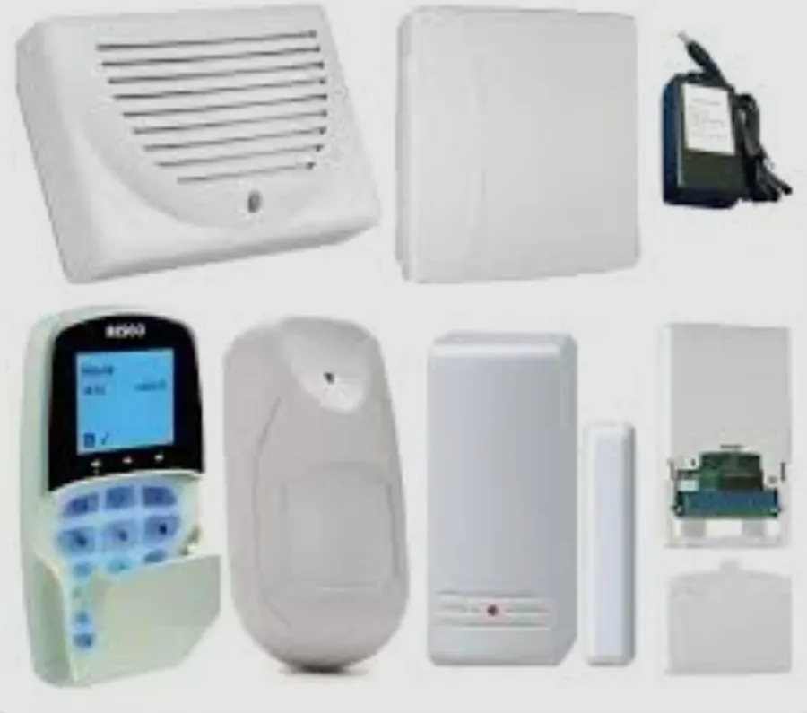
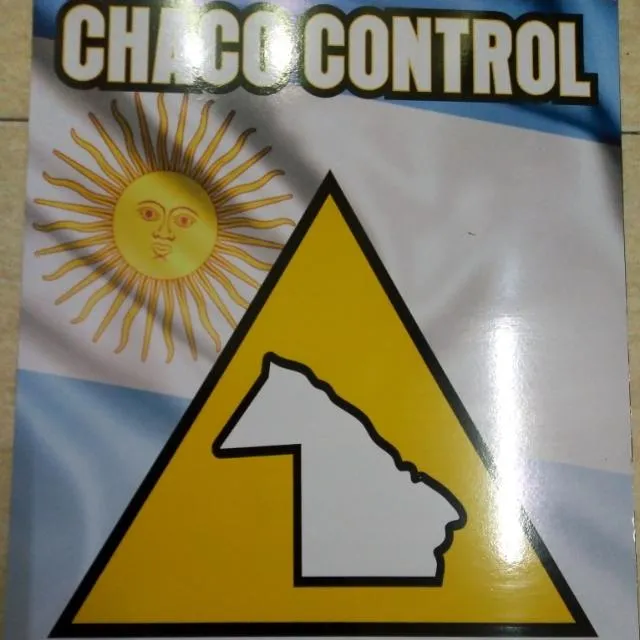

Alarmas
Venta e instalación de sistemas de alarma: panel, teclado, sensores de movimiento, contactos magnéticos en puertas y ventanas, sirena y batería de respaldo.

26°47′ S · 60°26′ OSan Martín 1203 · Sáenz Peña
Vendemos e instalamos sistemas de alarma y videovigilancia en toda la provincia del Chaco, desde Presidencia Roque Sáenz Peña. Los monitoreamos desde nuestra central propia y, cuando el evento es real, va un guardia.
Monitoreo 24 h
La alarma sola hace ruido. Con monitoreo, alguien la escucha: la señal llega a nuestra central en Sáenz Peña y se actúa.
Se abre una puerta o ventana, hay movimiento adentro, se corta una barrera o alguien aprieta el botón antipánico.
El panel avisa al instante a nuestra central de monitoreo propia, atendida las 24 horas.
El operador ve qué zona se disparó y determina si se trata de un evento real.
Si el evento es real, un guardia de Chaco Control va al lugar a atenderlo.
¿Tenés un comercio, una obra o un lugar que necesita presencia fija? También ponemos guardias en objetivos. Consultá por guardias →
Lo que hacemos
Vendemos, instalamos, monitoreamos y mantenemos. Y cuando hace falta, ponemos gente.
Venta e instalación de sistemas de alarma: panel, teclado, sensores de movimiento, contactos magnéticos en puertas y ventanas, sirena y batería de respaldo.

Kits de videovigilancia con grabador y cámaras para interior y exterior. Los instalamos, los configuramos y te dejamos viéndolos.

Tu alarma conectada a nuestra central propia. No dependés de que un vecino escuche la sirena.
Guardias en objetivos, con presencia en el lugar, y guardia de respuesta que atiende los eventos reales que detecta el monitoreo.
Instalaciones y mantenimiento de cámaras y alarmas. Si ya tenés equipos y algo no anda, lo revisamos.

Armá tu sistema
Tocá puertas, ventanas, ambientes y el exterior. Cada punto se vuelve una zona del teclado. Después nos lo mandás por WhatsApp y te pasamos el presupuesto.
Plano de referencia. Si tu lugar es distinto, marcá lo parecido y contanos el resto en el mensaje.
No es un presupuesto automático: es para que sepamos qué querés cubrir. Precio y promociones vigentes te los pasamos por WhatsApp.
Equipos
Algunos de los equipos que vendemos e instalamos. Preguntá por las promociones del momento.

Grabador DVR Dahua + 4 cámaras bullet.
Consultar este kit →
2 domo + 2 bullet, DVR, cables y fuente. 1080p · H.265+.
Consultar este kit →Panel DSC, teclado, sensores de movimiento, sirena, contactos y batería.
Consultar este kit →
Teclado, sensor de movimiento, contacto magnético, sirena y módulos.
Consultar este kit →Las marcas mencionadas pertenecen a sus fabricantes. Imágenes de producto ilustrativas.

De acá
Chaco Control es una empresa de seguridad privada de Presidencia Roque Sáenz Peña. Vendemos e instalamos alarmas, cámaras, barreras, sensores y control antipánico; monitoreamos desde nuestra central propia y tenemos guardias para objetivos y para responder a los eventos reales. Las instalaciones las hacemos en toda la provincia del Chaco.
El triángulo amarillo con el Chaco adentro es nuestro cartel de siempre. Hoy lo acompaña el hexágono, pero la idea es la misma: cuidar lo de acá, desde acá.
Preguntas
Sí. Hacemos instalaciones de alarmas y cámaras en toda la provincia del Chaco. Contanos la localidad por WhatsApp y coordinamos.
Una alarma sola hace sonar la sirena y depende de que alguien la escuche. Con monitoreo, la señal llega a nuestra central propia, se evalúa el evento y, si es real, va un guardia.
Es un botón (fijo o en un control) que se aprieta ante una emergencia y manda la señal a la central sin hacer sonar la sirena. Lo instalamos junto con la alarma.
Un kit típico trae el grabador (DVR), cuatro cámaras, cables y fuente. Según el lugar combinamos cámaras domo para interior y bullet para exterior.
Sí. Hacemos servicio técnico y mantenimiento de cámaras y alarmas. Contanos por WhatsApp qué equipo tenés y qué está fallando.
Depende de cuántas zonas, cámaras y servicios necesites. Marcá lo que querés cuidar en el plano y te pasamos el presupuesto con las promociones vigentes.
Escribinos desde cualquier punto del Chaco: instalamos en toda la provincia.
San Martín 1203 · Presidencia Roque Sáenz Peña · Chaco